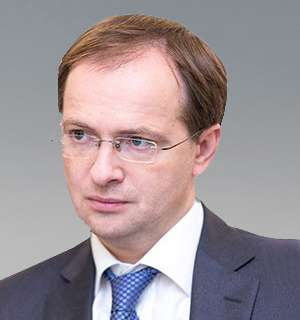

Министр культуры 2012–2020.
Советник Путина. Переписыватель истории.

18 июля 1970 года в Смеле (Черкасская область, Украина). Будущий министр культуры, утверждавший, что «Украины не существует как цивилизации», родился там. Окончил МГИМО. Депутат Госдумы с 2003 года от «Единой России».
Назначен министром культуры. Восемь лет управляет культурной политикой страны: кино, театр, музеи, книгоиздание. Превращает культуру в инструмент государственной идеологии. Интерпр. Вводит обязательный «патриотический» контент для финансирования.
«Диссертационный скандал»: академики и историки фиксируют грубые фактические ошибки в его докторской диссертации по истории. Требования лишить учёной степени. Мединский отвергает критику, называет её «политической» атакой. Степень остаётся.
Покидает пост министра, остаётся советником Путина. Продолжает продвигать «историческую политику»: переосмысление Второй мировой, пакта Молотова–Риббентропа, отрицание украинской идентичности как «исторической выдумки».
Возглавляет российскую делегацию на переговорах с Украиной в Беларуси и Турции (март 2022). После краха переговоров объясняет: Россия не могла принять условия Украины, потому что «Россия — правопреемник Советского Союза, а он выиграл Вторую мировую войну».
Мединский остаётся главным публичным переговорщиком России. В 2024 году активно продвигал тезис о том, что западные посредники «не понимают исторического контекста» конфликта. После победы Трампа на выборах в ноябре 2024 года Мединский стал одним из первых, кто публично заявил о «возможности диалога» — но исключительно на российских условиях: признание аннексированных территорий, нейтралитет Украины, отказ от НАТО. Его книга «Война» переиздана рекордным тиражом.
В 2025 году Мединский стал ключевой фигурой российско-американского переговорного трека при администрации Трампа. Встречи в Эр-Рияде и Стамбуле — он представляет Москву. Его риторика неизменна: «Россия не проигрывала войн, которые вела за своё существование». Западные дипломаты описывают его как жёсткого переговорщика, использующего историческую аргументацию как инструмент затягивания. Санкции ЕС, США, Великобритании и Канады остаются в силе — он их игнорируетФакт.
Министерство культуры контролирует госфинансирование кино, театра, музеев. «Патриотическое кино» получает деньги. Независимое и критическое — нет. За 8 лет министерства Мединский трансформировал российскую культуру в государственный пропагандистский аппарат.
Под руководством Мединского переработаны школьные учебники истории. Роль Сталина — «эффективный менеджер». Пакт Молотова–Риббентропа — «вынужденная необходимость». Украина — «искусственное образование». Это изучают десятки миллионов детей.
Нарратив «Украина — часть России» опирается на «историческую» базу, которую Мединский строил годами. Вторжение 2022 года преподносится не как агрессия, а как «историческая коррекция» — с готовой академической упаковкой.
Участие в переговорах с Украиной — уникальный случай: культурный функционер ведёт военные переговоры. Для Кремля это логично: война — продолжение культурной политики. Мединский — связующее звено между идеологией и дипломатией.
«Мединский — главный архитектор культурного национализма в России. Его диссертация полна фактических ошибок, но это не помешало ему 8 лет управлять историческим нарративом страны.»
«Он несёт ответственность за систематическое распространение государственной пропаганды через институты культуры, образования и кино. Именно это делает его опасным.»
«Родившись на Украине, Мединский построил карьеру на отрицании украинской идентичности. Это не парадокс — это типичная история постсоветского реваншизма.»
Все утверждения в данном досье основаны на открытых публичных источниках. Факты, отмеченные Факт, имеют прямые первичные источники. Отмеченные Интерпр. — авторская интерпретация задокументированных событий.